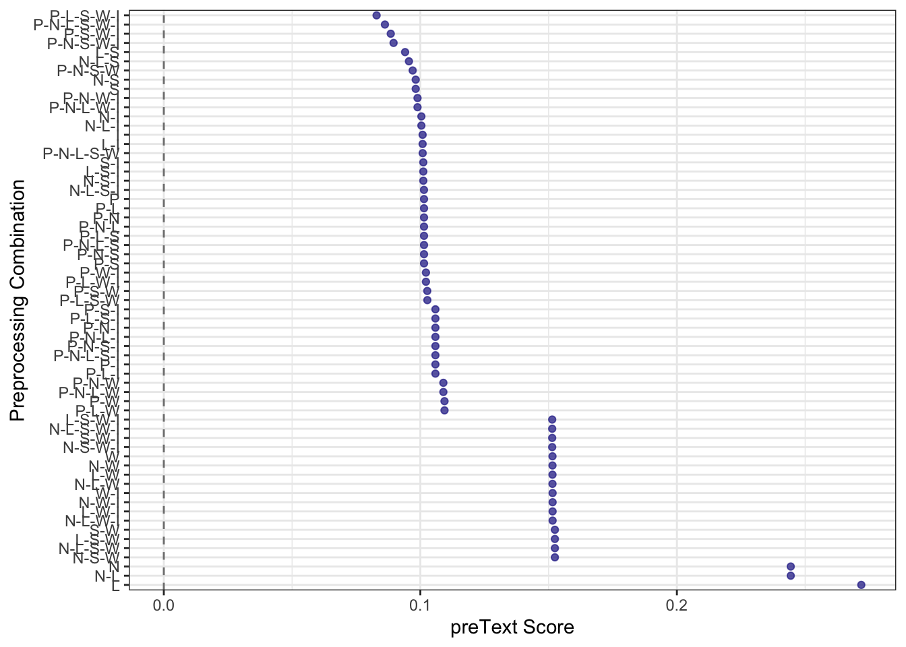
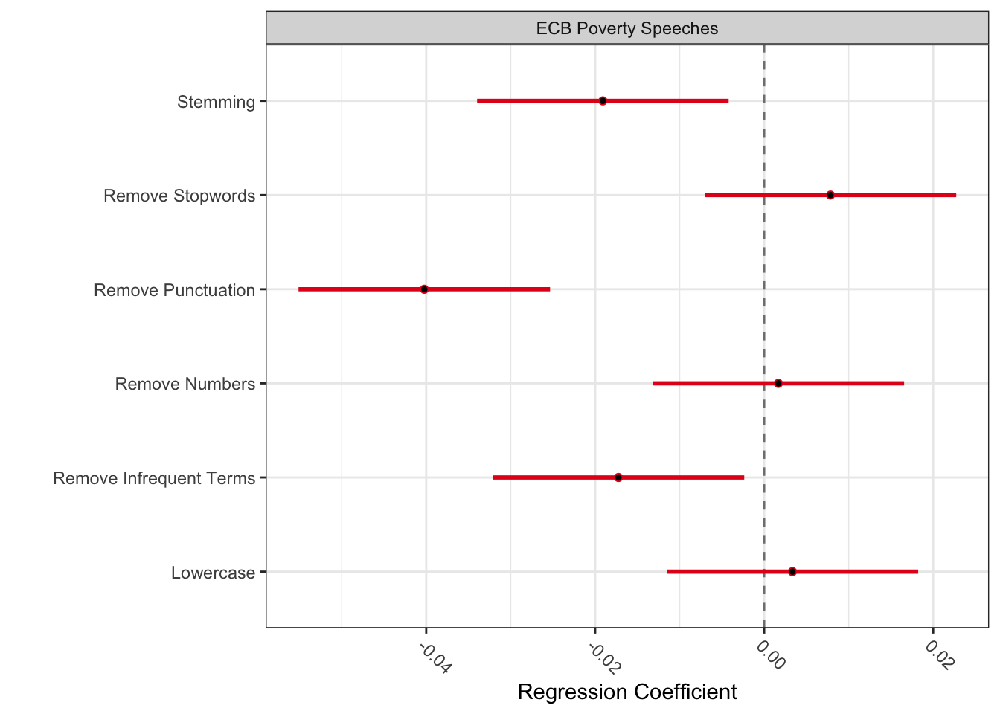
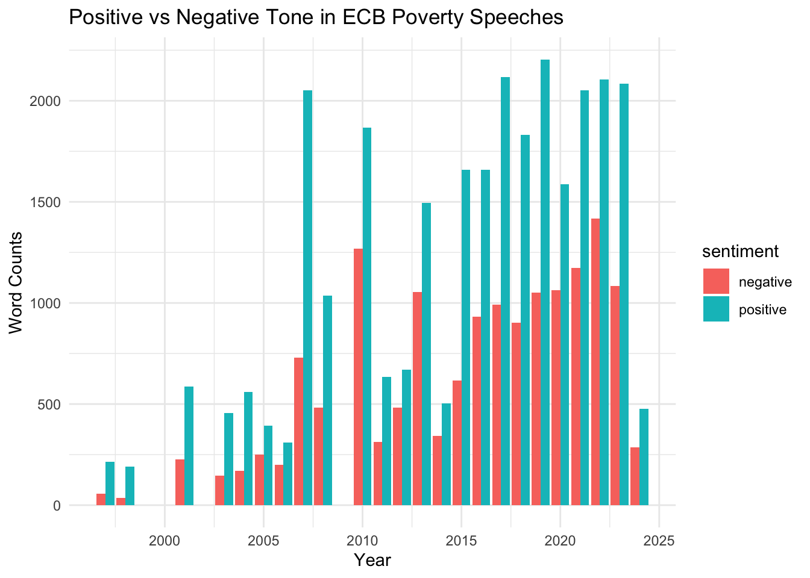

You can either complete this assignment using a dataset of your choice. This is a great opportunity for you to start working with a dataset that you can potentially use for your final project.
Your second option is to this dataset of social media posts from political candidates running for Congress during the 2022 U.S. Midterm election.
If you want say thanks to the people who collected and shared this data with us for this class, please send a email to my colleague Maggie MacDonald
IMPORTANT: Remember to NOT commit your data to github. Github does not allow you to push large datasets to remote repositories. If you commit your dataset, you will need to reset your commit, and that’s always a bit of work. In addition, remember that your notebook should be compiled with the results of the code blocks.
Question 1 ———————————————
Take a small a sample of your documents and read them carefully. This sample doesn’t need to be random. Select cases that are more interesting, and close to your theoretical interest in this dataset. What are you thoughts about these documents? What did you learn after reading them?
library(tidyverse)
── Attaching core tidyverse packages ──────────────────────── tidyverse 2.0.0 ──
✔ dplyr 1.1.4 ✔ readr 2.1.5
✔ forcats 1.0.0 ✔ stringr 1.5.1
✔ ggplot2 3.5.2 ✔ tibble 3.2.1
✔ lubridate 1.9.4 ✔ tidyr 1.3.1
✔ purrr 1.0.2
── Conflicts ────────────────────────────────────────── tidyverse_conflicts() ──
✖ dplyr::filter() masks stats::filter()
✖ dplyr::lag() masks stats::lag()
ℹ Use the conflicted package (<http://conflicted.r-lib.org/>) to force all conflicts to become errors
library(quanteda)
Package version: 4.3.1
Unicode version: 14.0
ICU version: 71.1
Parallel computing: disabled
See https://quanteda.io for tutorials and examples.
library(preText)
preText: Diagnostics to Assess the Effects of Text Preprocessing Decisions
Version 0.7.2 created on 2021-07-25.
copyright (c) 2021, Matthew J. Denny, Georgetown University
Arthur Spirling, NYU
Type vignette('getting_started_with_preText') to get started.
Development website: https://github.com/matthewjdenny/preText
# read the speech fileecb_speeches <-read_delim("~/Dev/PPOL6081/fraccaroli_arel-bundock_blyth_replication_20250523/data/all_ECB_speeches_20240426.csv",delim ="|")
Warning: One or more parsing issues, call `problems()` on your data frame for details,
e.g.:
dat <- vroom(...)
problems(dat)
Rows: 2781 Columns: 5
── Column specification ────────────────────────────────────────────────────────
Delimiter: "|"
chr (4): speakers, title, subtitle, contents
date (1): date
ℹ Use `spec()` to retrieve the full column specification for this data.
ℹ Specify the column types or set `show_col_types = FALSE` to quiet this message.
# show first rowshead(ecb_speeches)
# A tibble: 6 × 5
date speakers title subtitle contents
<date> <chr> <chr> <chr> <chr>
1 2024-03-27 Frank Elderson Taking into account climate an… Remarks… " SPEE…
2 2024-03-27 Piero Cipollone The confidence to act: monetar… Speech … " SPEE…
3 2024-03-22 Philip R. Lane Inflation and monetary policy Slides … <NA>
4 2024-03-20 Isabel Schnabel R(ising) star? Speech … " SPEE…
5 2024-03-20 <NA> Debate on: Is the inflation su… Slides … <NA>
6 2024-03-20 Christine Lagarde Building confidence in the pat… Speech … " SPEE…
# detect the speeches related to poverty and inequalitypoverty_speeches <- ecb_speeches %>%filter(str_detect(contents, regex("poverty|inequality|deprivation|income distribution|social inclusion", ignore_case =TRUE)) |str_detect(title, regex("poverty|inequality|deprivation|income distribution|social inclusion", ignore_case =TRUE)) |str_detect(subtitle, regex("poverty|inequality|deprivation|income distribution|social inclusion", ignore_case =TRUE)))
I selected three speeches — by Cipollone (2024), Schnabel (2023), and Lagarde (2022) — because they directly engage with themes of wages, living standards, and vulnerable households. Reading them closely, I observed that the ECB seldom uses the word “poverty” directly, but instead frames the issue through terms such as “low-income households,” “income distribution,” and “social cohesion.”
The speeches highlight how inflation disproportionately affects poorer groups, particularly via energy and food prices, while also stressing the need for wage recovery to sustain consumption. At the same time, they caution against excessive wage growth that might fuel inflation. These texts taught me that the ECB treats poverty and inequality as macroeconomic risks to stability rather than as social problems per se.
Question 2 —————————————————–
Tokenize your documents and pre-process them, removing any “extraneous” content you noticed in closely reading a sample of your documents. What content have you removed and why? Any pre-processing steps from what you saw in class that you consider not to use here?
# 0) create corpus poverty_corpus <-corpus(poverty_speeches, text_field ="contents")# see the outputsummary(poverty_corpus, n =5)
Corpus consisting of 159 documents, showing 5 documents:
Text Types Tokens Sentences date speakers
text1 1555 7719 290 2024-03-27 Piero Cipollone
text2 2080 8396 341 2024-02-16 Isabel Schnabel
text3 1332 4305 186 2023-12-04 Christine Lagarde
text4 734 1848 73 2023-10-14 Christine Lagarde
text5 709 1872 77 2023-09-29 Christine Lagarde
title
The confidence to act: monetary policy and the role of wages during the disinflation process
From laggard to leader? Closing the euro area’s technology gap
Governance at a turning point
IMFC Statement
Towards an orderly energy transition
subtitle
Speech by Piero Cipollone, Member of the Executive Board of the ECB, at an event organised by the House of the Euro and the Centre for European Reform
Inaugural lecture of the EMU Lab by Isabel Schnabel, Member of the Executive Board of the ECB, at the European University Institute
Speech by Christine Lagarde, President of the ECB, à l’Académie des sciences morales et politiques, Paris
Statement by Christine Lagarde, President of the ECB, at the forty-eight meeting of the International Monetary and Financial Committee
Opening remarks by Christine Lagarde, President of the ECB, at the joint IEA-ECB-EIB High-Level International Conference on “Ensuring an orderly energy transition: Europe’s competitiveness and financial stability in a period of global energy transformation”
class(poverty_corpus)
[1] "corpus" "character"
str(poverty_corpus)
'corpus' Named chr [1:159] " SPEECH The confidence to act: monetary policy and the role of wages during the disinflation process Speech"| __truncated__ ...
- attr(*, "names")= chr [1:159] "text1" "text2" "text3" "text4" ...
- attr(*, "docvars")='data.frame': 159 obs. of 7 variables:
..$ docname_: chr [1:159] "text1" "text2" "text3" "text4" ...
..$ docid_ : Factor w/ 159 levels "text1","text2",..: 1 2 3 4 5 6 7 8 9 10 ...
..$ segid_ : int [1:159] 1 1 1 1 1 1 1 1 1 1 ...
..$ date : Date[1:159], format: "2024-03-27" "2024-02-16" ...
..$ speakers: chr [1:159] "Piero Cipollone" "Isabel Schnabel" "Christine Lagarde" "Christine Lagarde" ...
..$ title : chr [1:159] "The confidence to act: monetary policy and the role of wages during the disinflation process" "From laggard to leader? Closing the euro area’s technology gap" "Governance at a turning point" "IMFC Statement" ...
..$ subtitle: chr [1:159] "Speech by Piero Cipollone, Member of the Executive Board of the ECB, at an event organised by the House of the "| __truncated__ "Inaugural lecture of the EMU Lab by Isabel Schnabel, Member of the Executive Board of the ECB, at the European "| __truncated__ "Speech by Christine Lagarde, President of the ECB, à l’Académie des sciences morales et politiques, Paris" "Statement by Christine Lagarde, President of the ECB, at the forty-eight meeting of the International Monetary "| __truncated__ ...
- attr(*, "meta")=List of 3
..$ system:List of 6
.. ..$ package-version:Classes 'package_version', 'numeric_version' hidden list of 1
.. .. ..$ : int [1:3] 4 3 1
.. ..$ r-version :Classes 'R_system_version', 'package_version', 'numeric_version' hidden list of 1
.. .. ..$ : int [1:3] 4 4 2
.. ..$ system : Named chr [1:3] "Darwin" "arm64" "jenniezhao"
.. .. ..- attr(*, "names")= chr [1:3] "sysname" "machine" "user"
.. ..$ directory : chr "/Users/jenniezhao/Dev/PPOL6081/problem-set-01-2025-JianiZhao0321"
.. ..$ created : Date[1:1], format: "2025-09-30"
.. ..$ source : chr "data.frame"
..$ object:List of 2
.. ..$ unit : chr "documents"
.. ..$ summary:List of 2
.. .. ..$ hash: chr(0)
.. .. ..$ data: NULL
..$ user : list()
# 1) tokenization# remove the punctuation, numbers, symbols, and URLspoverty_tokens_raw <-tokens( poverty_corpus,remove_punct =TRUE,remove_numbers =TRUE,remove_symbols =TRUE,remove_url =TRUE)#str(poverty_tokens_raw)#poverty_speeches$contents[1]# 2) Lowercase + stopwords + custom "extraneous" termsextraneous_terms <-c(stopwords("en"),"speech","slides","member","executive","board","president","vice","chart","figure","source","note","notes","ecb","eurostat","bce","eib","iea","imf","oecd","http","https","www","frankfurt","brussels","european","union","eu")poverty_tokens <- poverty_tokens_raw %>%tokens_tolower() %>%tokens_remove(extraneous_terms, padding =FALSE)# 3) n-gramspoverty_tokens_ng <-tokens_ngrams(poverty_tokens, n =1:2)# 4) build Document–Feature Matrix(dfm) dfm_poverty <-dfm(poverty_tokens_ng)# 5) trim extremes: appear in <5% of docs or >95% of docsdfm_poverty_trim <-dfm_trim( dfm_poverty,min_docfreq =0.05,max_docfreq =0.95,docfreq_type ="prop",verbose =TRUE)
dfm_trim() changed from 247,972 features (159 documents) to 6,047 features (159 documents)
monetary euro inflation area financial
3320 2883 2662 2558 2525
monetary_policy euro_area growth countries rate
2522 2387 1994 1620 1517
rates see central market interest
1515 1428 1410 1350 1321
banks global bank crisis price
1288 1246 1143 1107 1047
stability one markets may first
1022 957 954 935 909
time prices new effects real
888 865 862 839 823
fiscal economies years world measures
823 814 811 803 797
risk international income europe us
790 775 772 768 756
impact states level policies interest_rates
746 727 718 715 707
public capital since increase important
704 700 686 680 668
labour firms demand higher recent
665 659 657 651 646
low second trade investment even
642 634 627 622 616
two paper need example across
614 610 607 602 591
lower sector households expectations central_banks
584 580 578 572 569
working credit however conditions future
563 561 557 555 555
role central_bank risks many debt
550 547 544 543 541
national asset united m change
540 532 531 527 523
high structural system banking changes
522 521 518 515 514
current price_stability now particular shocks
512 509 503 502 500
large well year evidence pandemic
497 495 492 489 472
inflation area financial growth countries
2662 2558 2525 1994 1620
rate rates see market interest
1517 1515 1428 1350 1321
global crisis price stability one
1246 1107 1047 1022 957
markets may first time prices
954 935 909 888 865
new effects real fiscal economies
862 839 823 823 814
years world measures risk international
811 803 797 790 775
income europe us impact states
772 768 756 746 727
level policies interest_rates public capital
718 715 707 704 700
since increase important labour firms
686 680 668 665 659
demand higher recent low second
657 651 646 642 634
trade investment even two paper
627 622 616 614 610
need example across lower sector
607 602 591 584 580
households expectations central_banks working credit
578 572 569 563 561
however conditions future role central_bank
557 555 555 550 547
risks many debt national asset
544 543 541 540 532
united m change high structural
531 527 523 522 521
system banking changes current price_stability
518 515 514 512 509
now particular shocks large well
503 502 500 497 495
year evidence pandemic institutions potential
492 489 472 470 459
globalisation gdp reforms united_states today
456 454 452 450 444
At the beginning, I dropped generic stopwords, filler words (like slides, notes), and some institutional names (like IMF, OECD) that don’t carry substantive meaning.
Later, I removed domain-specific stopwords (ECB, monetary, policy, euro, bank) because they appear in almost every document and don’t help discriminate between speeches.
Question 3———————————————
Using Danny and Spirling’s Pretext, tell me which of the pre-processing steps makes a more substantive difference in the data transformation? Would you keep all these steps or would you follow the PreText recommendations? Use a sample of the data to solve this question.
pacman::p_load(quanteda, preText, dplyr)# Run factorial preprocessing (tries different combinations)preproc_docs <-factorial_preprocessing( poverty_corpus,use_ngrams =FALSE, infrequent_term_threshold =0.2, # drop rare termsverbose =TRUE)
Preprocessing 159 documents 64 different ways...
Currently working on combination 1 of 64
Creating a dfm from a tokens object...
...lowercasing
...complete, elapsed time: 0.021 seconds.
Finished constructing a 159 x 13,576 sparse dfm.
Removing 12400 of 13576 total terms that appeared in less than 32 documents.
Currently working on combination 2 of 64
Creating a dfm from a tokens object...
...lowercasing
...complete, elapsed time: 0.022 seconds.
Finished constructing a 159 x 13,604 sparse dfm.
Removing 12409 of 13604 total terms that appeared in less than 32 documents.
Currently working on combination 3 of 64
Creating a dfm from a tokens object...
...lowercasing
...complete, elapsed time: 0.022 seconds.
Finished constructing a 159 x 14,559 sparse dfm.
Removing 13326 of 14559 total terms that appeared in less than 32 documents.
Currently working on combination 4 of 64
Creating a dfm from a tokens object...
...lowercasing
...complete, elapsed time: 0.023 seconds.
Finished constructing a 159 x 14,587 sparse dfm.
Removing 13335 of 14587 total terms that appeared in less than 32 documents.
Currently working on combination 5 of 64
Creating a dfm from a tokens object...
...lowercasing
...complete, elapsed time: 0.023 seconds.
Finished constructing a 159 x 13,788 sparse dfm.
Removing 12607 of 13788 total terms that appeared in less than 32 documents.
Currently working on combination 6 of 64
Creating a dfm from a tokens object...
...lowercasing
...complete, elapsed time: 0.026 seconds.
Finished constructing a 159 x 13,816 sparse dfm.
Removing 12616 of 13816 total terms that appeared in less than 32 documents.
Currently working on combination 7 of 64
Creating a dfm from a tokens object...
...lowercasing
...complete, elapsed time: 0.024 seconds.
Finished constructing a 159 x 14,771 sparse dfm.
Removing 13533 of 14771 total terms that appeared in less than 32 documents.
Currently working on combination 8 of 64
Creating a dfm from a tokens object...
...lowercasing
...complete, elapsed time: 0.026 seconds.
Finished constructing a 159 x 14,799 sparse dfm.
Removing 13542 of 14799 total terms that appeared in less than 32 documents.
Currently working on combination 9 of 64
Creating a dfm from a tokens object...
...lowercasing
...complete, elapsed time: 0.024 seconds.
Finished constructing a 159 x 19,335 sparse dfm.
Removing 18024 of 19335 total terms that appeared in less than 32 documents.
Currently working on combination 10 of 64
Creating a dfm from a tokens object...
...lowercasing
...complete, elapsed time: 0.026 seconds.
Finished constructing a 159 x 19,363 sparse dfm.
Removing 18033 of 19363 total terms that appeared in less than 32 documents.
Currently working on combination 11 of 64
Creating a dfm from a tokens object...
...lowercasing
...complete, elapsed time: 0.026 seconds.
Finished constructing a 159 x 20,318 sparse dfm.
Removing 18950 of 20318 total terms that appeared in less than 32 documents.
Currently working on combination 12 of 64
Creating a dfm from a tokens object...
...lowercasing
...complete, elapsed time: 0.03 seconds.
Finished constructing a 159 x 20,346 sparse dfm.
Removing 18959 of 20346 total terms that appeared in less than 32 documents.
Currently working on combination 13 of 64
Creating a dfm from a tokens object...
...lowercasing
...complete, elapsed time: 0.031 seconds.
Finished constructing a 159 x 19,335 sparse dfm.
Removing 18024 of 19335 total terms that appeared in less than 32 documents.
Currently working on combination 14 of 64
Creating a dfm from a tokens object...
...lowercasing
...complete, elapsed time: 0.032 seconds.
Finished constructing a 159 x 19,363 sparse dfm.
Removing 18033 of 19363 total terms that appeared in less than 32 documents.
Currently working on combination 15 of 64
Creating a dfm from a tokens object...
...lowercasing
...complete, elapsed time: 0.03 seconds.
Finished constructing a 159 x 20,318 sparse dfm.
Removing 18950 of 20318 total terms that appeared in less than 32 documents.
Currently working on combination 16 of 64
Creating a dfm from a tokens object...
...lowercasing
...complete, elapsed time: 0.032 seconds.
Finished constructing a 159 x 20,346 sparse dfm.
Removing 18959 of 20346 total terms that appeared in less than 32 documents.
Currently working on combination 17 of 64
Creating a dfm from a tokens object...
...lowercasing
...complete, elapsed time: 0.026 seconds.
Finished constructing a 159 x 13,704 sparse dfm.
Removing 12425 of 13704 total terms that appeared in less than 32 documents.
Currently working on combination 18 of 64
Creating a dfm from a tokens object...
...lowercasing
...complete, elapsed time: 0.029 seconds.
Finished constructing a 159 x 13,732 sparse dfm.
Removing 12434 of 13732 total terms that appeared in less than 32 documents.
Currently working on combination 19 of 64
Creating a dfm from a tokens object...
...lowercasing
...complete, elapsed time: 0.028 seconds.
Finished constructing a 159 x 14,687 sparse dfm.
Removing 13351 of 14687 total terms that appeared in less than 32 documents.
Currently working on combination 20 of 64
Creating a dfm from a tokens object...
...lowercasing
...complete, elapsed time: 0.03 seconds.
Finished constructing a 159 x 14,715 sparse dfm.
Removing 13360 of 14715 total terms that appeared in less than 32 documents.
Currently working on combination 21 of 64
Creating a dfm from a tokens object...
...lowercasing
...complete, elapsed time: 0.039 seconds.
Finished constructing a 159 x 13,919 sparse dfm.
Removing 12635 of 13919 total terms that appeared in less than 32 documents.
Currently working on combination 22 of 64
Creating a dfm from a tokens object...
...lowercasing
...complete, elapsed time: 0.043 seconds.
Finished constructing a 159 x 13,947 sparse dfm.
Removing 12644 of 13947 total terms that appeared in less than 32 documents.
Currently working on combination 23 of 64
Creating a dfm from a tokens object...
...lowercasing
...complete, elapsed time: 0.039 seconds.
Finished constructing a 159 x 14,902 sparse dfm.
Removing 13561 of 14902 total terms that appeared in less than 32 documents.
Currently working on combination 24 of 64
Creating a dfm from a tokens object...
...lowercasing
...complete, elapsed time: 0.036 seconds.
Finished constructing a 159 x 14,930 sparse dfm.
Removing 13570 of 14930 total terms that appeared in less than 32 documents.
Currently working on combination 25 of 64
Creating a dfm from a tokens object...
...lowercasing
...complete, elapsed time: 0.032 seconds.
Finished constructing a 159 x 19,485 sparse dfm.
Removing 18065 of 19485 total terms that appeared in less than 32 documents.
Currently working on combination 26 of 64
Creating a dfm from a tokens object...
...lowercasing
...complete, elapsed time: 0.033 seconds.
Finished constructing a 159 x 19,513 sparse dfm.
Removing 18074 of 19513 total terms that appeared in less than 32 documents.
Currently working on combination 27 of 64
Creating a dfm from a tokens object...
...lowercasing
...complete, elapsed time: 0.032 seconds.
Finished constructing a 159 x 20,468 sparse dfm.
Removing 18991 of 20468 total terms that appeared in less than 32 documents.
Currently working on combination 28 of 64
Creating a dfm from a tokens object...
...lowercasing
...complete, elapsed time: 0.045 seconds.
Finished constructing a 159 x 20,496 sparse dfm.
Removing 19000 of 20496 total terms that appeared in less than 32 documents.
Currently working on combination 29 of 64
Creating a dfm from a tokens object...
...lowercasing
...complete, elapsed time: 0.164 seconds.
Finished constructing a 159 x 19,485 sparse dfm.
Removing 18065 of 19485 total terms that appeared in less than 32 documents.
Currently working on combination 30 of 64
Creating a dfm from a tokens object...
...lowercasing
...complete, elapsed time: 0.038 seconds.
Finished constructing a 159 x 19,513 sparse dfm.
Removing 18074 of 19513 total terms that appeared in less than 32 documents.
Currently working on combination 31 of 64
Creating a dfm from a tokens object...
...lowercasing
...complete, elapsed time: 0.038 seconds.
Finished constructing a 159 x 20,468 sparse dfm.
Removing 18991 of 20468 total terms that appeared in less than 32 documents.
Currently working on combination 32 of 64
Creating a dfm from a tokens object...
...lowercasing
...complete, elapsed time: 0.04 seconds.
Finished constructing a 159 x 20,496 sparse dfm.
Removing 19000 of 20496 total terms that appeared in less than 32 documents.
Currently working on combination 33 of 64
Creating a dfm from a tokens object...
...lowercasing
...complete, elapsed time: 0.02 seconds.
Finished constructing a 159 x 13,576 sparse dfm.
Currently working on combination 34 of 64
Creating a dfm from a tokens object...
...lowercasing
...complete, elapsed time: 0.034 seconds.
Finished constructing a 159 x 13,604 sparse dfm.
Currently working on combination 35 of 64
Creating a dfm from a tokens object...
...lowercasing
...complete, elapsed time: 0.03 seconds.
Finished constructing a 159 x 14,559 sparse dfm.
Currently working on combination 36 of 64
Creating a dfm from a tokens object...
...lowercasing
...complete, elapsed time: 0.032 seconds.
Finished constructing a 159 x 14,587 sparse dfm.
Currently working on combination 37 of 64
Creating a dfm from a tokens object...
...lowercasing
...complete, elapsed time: 0.023 seconds.
Finished constructing a 159 x 13,788 sparse dfm.
Currently working on combination 38 of 64
Creating a dfm from a tokens object...
...lowercasing
...complete, elapsed time: 0.026 seconds.
Finished constructing a 159 x 13,816 sparse dfm.
Currently working on combination 39 of 64
Creating a dfm from a tokens object...
...lowercasing
...complete, elapsed time: 0.026 seconds.
Finished constructing a 159 x 14,771 sparse dfm.
Currently working on combination 40 of 64
Creating a dfm from a tokens object...
...lowercasing
...complete, elapsed time: 0.028 seconds.
Finished constructing a 159 x 14,799 sparse dfm.
Currently working on combination 41 of 64
Creating a dfm from a tokens object...
...lowercasing
...complete, elapsed time: 0.028 seconds.
Finished constructing a 159 x 19,335 sparse dfm.
Currently working on combination 42 of 64
Creating a dfm from a tokens object...
...lowercasing
...complete, elapsed time: 0.028 seconds.
Finished constructing a 159 x 19,363 sparse dfm.
Currently working on combination 43 of 64
Creating a dfm from a tokens object...
...lowercasing
...complete, elapsed time: 0.026 seconds.
Finished constructing a 159 x 20,318 sparse dfm.
Currently working on combination 44 of 64
Creating a dfm from a tokens object...
...lowercasing
...complete, elapsed time: 0.028 seconds.
Finished constructing a 159 x 20,346 sparse dfm.
Currently working on combination 45 of 64
Creating a dfm from a tokens object...
...lowercasing
...complete, elapsed time: 0.028 seconds.
Finished constructing a 159 x 19,335 sparse dfm.
Currently working on combination 46 of 64
Creating a dfm from a tokens object...
...lowercasing
...complete, elapsed time: 0.031 seconds.
Finished constructing a 159 x 19,363 sparse dfm.
Currently working on combination 47 of 64
Creating a dfm from a tokens object...
...lowercasing
...complete, elapsed time: 0.03 seconds.
Finished constructing a 159 x 20,318 sparse dfm.
Currently working on combination 48 of 64
Creating a dfm from a tokens object...
...lowercasing
...complete, elapsed time: 0.031 seconds.
Finished constructing a 159 x 20,346 sparse dfm.
Currently working on combination 49 of 64
Creating a dfm from a tokens object...
...lowercasing
...complete, elapsed time: 0.027 seconds.
Finished constructing a 159 x 13,704 sparse dfm.
Currently working on combination 50 of 64
Creating a dfm from a tokens object...
...lowercasing
...complete, elapsed time: 0.029 seconds.
Finished constructing a 159 x 13,732 sparse dfm.
Currently working on combination 51 of 64
Creating a dfm from a tokens object...
...lowercasing
...complete, elapsed time: 0.027 seconds.
Finished constructing a 159 x 14,687 sparse dfm.
Currently working on combination 52 of 64
Creating a dfm from a tokens object...
...lowercasing
...complete, elapsed time: 0.029 seconds.
Finished constructing a 159 x 14,715 sparse dfm.
Currently working on combination 53 of 64
Creating a dfm from a tokens object...
...lowercasing
...complete, elapsed time: 0.029 seconds.
Finished constructing a 159 x 13,919 sparse dfm.
Currently working on combination 54 of 64
Creating a dfm from a tokens object...
...lowercasing
...complete, elapsed time: 0.032 seconds.
Finished constructing a 159 x 13,947 sparse dfm.
Currently working on combination 55 of 64
Creating a dfm from a tokens object...
...lowercasing
...complete, elapsed time: 0.032 seconds.
Finished constructing a 159 x 14,902 sparse dfm.
Currently working on combination 56 of 64
Creating a dfm from a tokens object...
...lowercasing
...complete, elapsed time: 0.043 seconds.
Finished constructing a 159 x 14,930 sparse dfm.
Currently working on combination 57 of 64
Creating a dfm from a tokens object...
...lowercasing
...complete, elapsed time: 0.031 seconds.
Finished constructing a 159 x 19,485 sparse dfm.
Currently working on combination 58 of 64
Creating a dfm from a tokens object...
...lowercasing
...complete, elapsed time: 0.033 seconds.
Finished constructing a 159 x 19,513 sparse dfm.
Currently working on combination 59 of 64
Creating a dfm from a tokens object...
...lowercasing
...complete, elapsed time: 0.048 seconds.
Finished constructing a 159 x 20,468 sparse dfm.
Currently working on combination 60 of 64
Creating a dfm from a tokens object...
...lowercasing
...complete, elapsed time: 0.035 seconds.
Finished constructing a 159 x 20,496 sparse dfm.
Currently working on combination 61 of 64
Creating a dfm from a tokens object...
...lowercasing
...complete, elapsed time: 0.043 seconds.
Finished constructing a 159 x 19,485 sparse dfm.
Currently working on combination 62 of 64
Creating a dfm from a tokens object...
...lowercasing
...complete, elapsed time: 0.038 seconds.
Finished constructing a 159 x 19,513 sparse dfm.
Currently working on combination 63 of 64
Creating a dfm from a tokens object...
...lowercasing
...complete, elapsed time: 0.037 seconds.
Finished constructing a 159 x 20,468 sparse dfm.
Currently working on combination 64 of 64
Creating a dfm from a tokens object...
...lowercasing
...complete, elapsed time: 0.04 seconds.
Finished constructing a 159 x 20,496 sparse dfm.
# Run preTextpretext_results <-preText( preproc_docs,dataset_name ="ECB Poverty Speeches",distance_method ="cosine",num_comparisons =20, # how many random comparisonsverbose =TRUE)
Generating document distances...
Currently working on dfm 1 of 64
Complete in: 0.051 seconds...
Currently working on dfm 2 of 64
Complete in: 0.043 seconds...
Currently working on dfm 3 of 64
Complete in: 0.028 seconds...
Currently working on dfm 4 of 64
Complete in: 0.028 seconds...
Currently working on dfm 5 of 64
Complete in: 0.027 seconds...
Currently working on dfm 6 of 64
Complete in: 0.028 seconds...
Currently working on dfm 7 of 64
Complete in: 0.028 seconds...
Currently working on dfm 8 of 64
Complete in: 0.029 seconds...
Currently working on dfm 9 of 64
Complete in: 0.025 seconds...
Currently working on dfm 10 of 64
Complete in: 0.034 seconds...
Currently working on dfm 11 of 64
Complete in: 0.027 seconds...
Currently working on dfm 12 of 64
Complete in: 0.029 seconds...
Currently working on dfm 13 of 64
Complete in: 0.026 seconds...
Currently working on dfm 14 of 64
Complete in: 0.027 seconds...
Currently working on dfm 15 of 64
Complete in: 0.027 seconds...
Currently working on dfm 16 of 64
Complete in: 0.028 seconds...
Currently working on dfm 17 of 64
Complete in: 0.038 seconds...
Currently working on dfm 18 of 64
Complete in: 0.032 seconds...
Currently working on dfm 19 of 64
Complete in: 0.032 seconds...
Currently working on dfm 20 of 64
Complete in: 0.032 seconds...
Currently working on dfm 21 of 64
Complete in: 0.031 seconds...
Currently working on dfm 22 of 64
Complete in: 0.031 seconds...
Currently working on dfm 23 of 64
Complete in: 0.042 seconds...
Currently working on dfm 24 of 64
Complete in: 0.032 seconds...
Currently working on dfm 25 of 64
Complete in: 0.031 seconds...
Currently working on dfm 26 of 64
Complete in: 0.03 seconds...
Currently working on dfm 27 of 64
Complete in: 0.031 seconds...
Currently working on dfm 28 of 64
Complete in: 0.031 seconds...
Currently working on dfm 29 of 64
Complete in: 0.03 seconds...
Currently working on dfm 30 of 64
Complete in: 0.031 seconds...
Currently working on dfm 31 of 64
Complete in: 0.037 seconds...
Currently working on dfm 32 of 64
Complete in: 0.032 seconds...
Currently working on dfm 33 of 64
Complete in: 0.042 seconds...
Currently working on dfm 34 of 64
Complete in: 0.044 seconds...
Currently working on dfm 35 of 64
Complete in: 0.051 seconds...
Currently working on dfm 36 of 64
Complete in: 0.047 seconds...
Currently working on dfm 37 of 64
Complete in: 0.043 seconds...
Currently working on dfm 38 of 64
Complete in: 0.044 seconds...
Currently working on dfm 39 of 64
Complete in: 0.053 seconds...
Currently working on dfm 40 of 64
Complete in: 0.046 seconds...
Currently working on dfm 41 of 64
Complete in: 0.048 seconds...
Currently working on dfm 42 of 64
Complete in: 0.058 seconds...
Currently working on dfm 43 of 64
Complete in: 0.051 seconds...
Currently working on dfm 44 of 64
Complete in: 0.051 seconds...
Currently working on dfm 45 of 64
Complete in: 0.056 seconds...
Currently working on dfm 46 of 64
Complete in: 0.05 seconds...
Currently working on dfm 47 of 64
Complete in: 0.154 seconds...
Currently working on dfm 48 of 64
Complete in: 0.054 seconds...
Currently working on dfm 49 of 64
Complete in: 0.047 seconds...
Currently working on dfm 50 of 64
Complete in: 0.047 seconds...
Currently working on dfm 51 of 64
Complete in: 0.048 seconds...
Currently working on dfm 52 of 64
Complete in: 0.05 seconds...
Currently working on dfm 53 of 64
Complete in: 0.048 seconds...
Currently working on dfm 54 of 64
Complete in: 0.048 seconds...
Currently working on dfm 55 of 64
Complete in: 0.057 seconds...
Currently working on dfm 56 of 64
Complete in: 0.049 seconds...
Currently working on dfm 57 of 64
Complete in: 0.052 seconds...
Currently working on dfm 58 of 64
Complete in: 0.054 seconds...
Currently working on dfm 59 of 64
Complete in: 0.06 seconds...
Currently working on dfm 60 of 64
Complete in: 0.071 seconds...
Currently working on dfm 61 of 64
Complete in: 0.068 seconds...
Currently working on dfm 62 of 64
Complete in: 0.058 seconds...
Currently working on dfm 63 of 64
Complete in: 0.058 seconds...
Currently working on dfm 64 of 64
Complete in: 0.059 seconds...
Generating preText Scores...
Currently working on DFM: 1 of 64
Complete in: 0.033 seconds...
Currently working on DFM: 2 of 64
Complete in: 0.034 seconds...
Currently working on DFM: 3 of 64
Complete in: 0.031 seconds...
Currently working on DFM: 4 of 64
Complete in: 0.029 seconds...
Currently working on DFM: 5 of 64
Complete in: 0.033 seconds...
Currently working on DFM: 6 of 64
Complete in: 0.034 seconds...
Currently working on DFM: 7 of 64
Complete in: 0.038 seconds...
Currently working on DFM: 8 of 64
Complete in: 0.029 seconds...
Currently working on DFM: 9 of 64
Complete in: 0.031 seconds...
Currently working on DFM: 10 of 64
Complete in: 0.03 seconds...
Currently working on DFM: 11 of 64
Complete in: 0.029 seconds...
Currently working on DFM: 12 of 64
Complete in: 0.03 seconds...
Currently working on DFM: 13 of 64
Complete in: 0.03 seconds...
Currently working on DFM: 14 of 64
Complete in: 0.03 seconds...
Currently working on DFM: 15 of 64
Complete in: 0.03 seconds...
Currently working on DFM: 16 of 64
Complete in: 0.028 seconds...
Currently working on DFM: 17 of 64
Complete in: 0.03 seconds...
Currently working on DFM: 18 of 64
Complete in: 0.029 seconds...
Currently working on DFM: 19 of 64
Complete in: 0.03 seconds...
Currently working on DFM: 20 of 64
Complete in: 0.029 seconds...
Currently working on DFM: 21 of 64
Complete in: 0.03 seconds...
Currently working on DFM: 22 of 64
Complete in: 0.029 seconds...
Currently working on DFM: 23 of 64
Complete in: 0.03 seconds...
Currently working on DFM: 24 of 64
Complete in: 0.03 seconds...
Currently working on DFM: 25 of 64
Complete in: 0.03 seconds...
Currently working on DFM: 26 of 64
Complete in: 0.029 seconds...
Currently working on DFM: 27 of 64
Complete in: 0.03 seconds...
Currently working on DFM: 28 of 64
Complete in: 0.03 seconds...
Currently working on DFM: 29 of 64
Complete in: 0.03 seconds...
Currently working on DFM: 30 of 64
Complete in: 0.03 seconds...
Currently working on DFM: 31 of 64
Complete in: 0.03 seconds...
Currently working on DFM: 32 of 64
Complete in: 0.031 seconds...
Currently working on DFM: 33 of 64
Complete in: 0.03 seconds...
Currently working on DFM: 34 of 64
Complete in: 0.03 seconds...
Currently working on DFM: 35 of 64
Complete in: 0.03 seconds...
Currently working on DFM: 36 of 64
Complete in: 0.03 seconds...
Currently working on DFM: 37 of 64
Complete in: 0.03 seconds...
Currently working on DFM: 38 of 64
Complete in: 0.03 seconds...
Currently working on DFM: 39 of 64
Complete in: 0.029 seconds...
Currently working on DFM: 40 of 64
Complete in: 0.03 seconds...
Currently working on DFM: 41 of 64
Complete in: 0.03 seconds...
Currently working on DFM: 42 of 64
Complete in: 0.03 seconds...
Currently working on DFM: 43 of 64
Complete in: 0.029 seconds...
Currently working on DFM: 44 of 64
Complete in: 0.036 seconds...
Currently working on DFM: 45 of 64
Complete in: 0.037 seconds...
Currently working on DFM: 46 of 64
Complete in: 0.036 seconds...
Currently working on DFM: 47 of 64
Complete in: 0.036 seconds...
Currently working on DFM: 48 of 64
Complete in: 0.032 seconds...
Currently working on DFM: 49 of 64
Complete in: 0.03 seconds...
Currently working on DFM: 50 of 64
Complete in: 0.03 seconds...
Currently working on DFM: 51 of 64
Complete in: 0.031 seconds...
Currently working on DFM: 52 of 64
Complete in: 0.031 seconds...
Currently working on DFM: 53 of 64
Complete in: 0.029 seconds...
Currently working on DFM: 54 of 64
Complete in: 0.03 seconds...
Currently working on DFM: 55 of 64
Complete in: 0.031 seconds...
Currently working on DFM: 56 of 64
Complete in: 0.03 seconds...
Currently working on DFM: 57 of 64
Complete in: 0.037 seconds...
Currently working on DFM: 58 of 64
Complete in: 0.029 seconds...
Currently working on DFM: 59 of 64
Complete in: 0.03 seconds...
Currently working on DFM: 60 of 64
Complete in: 0.029 seconds...
Currently working on DFM: 61 of 64
Complete in: 0.029 seconds...
Currently working on DFM: 62 of 64
Complete in: 0.03 seconds...
Currently working on DFM: 63 of 64
Complete in: 0.03 seconds...
Currently working on DFM: 64 of 64
Complete in: 0 seconds...
Generating regression results..
The R^2 for this model is: 0.4192663
Regression results (negative coefficients imply less risk):
Variable Coefficient SE
1 Intercept 0.153 0.011
2 Remove Punctuation -0.040 0.008
3 Remove Numbers 0.002 0.008
4 Lowercase 0.003 0.008
5 Stemming -0.019 0.008
6 Remove Stopwords 0.008 0.008
7 Remove Infrequent Terms -0.017 0.008
Complete in: 4.755 seconds...
# Plot the scorespreText_score_plot(pretext_results)
Warning in ggplot2::geom_point(ggplot2::aes(x = Variable, y = Coefficient), :
Ignoring unknown parameters: `linewidth`

# Regression coefficients: which steps matter?regression_coefficient_plot(pretext_results,remove_intercept =TRUE)
Warning in ggplot2::geom_point(ggplot2::aes(y = Variable, x = Coefficient), :
Ignoring unknown parameters: `linewidth`

which preprocessing steps matter most? - Among all the cleaning steps, punctuation removal changes ECB speeches the most, followed by stemming and dropping rare words. Stopword removal has some effect, while numbers and lowercasing hardly matter. This suggests we should be cautious with punctuation and stemming, but we can safely lowercase and remove numbers.
Would I keep all the steps? - I would keep basic cleaning (lowercasing, numbers, stopwords), but I would avoid stemming and punctuation removal, since PreText shows they alter the data the most and risk losing important meaning.
Question 4 ———————————————
Pick an important source of variation in your data (for example: date, author identity, location, etc.). Subset the data along this dimension, and discuss which words discriminate better each group. You can do this by using TF-IDF, PMI, log(share \(word_i\) in group a/share \(word_i\) in b), or create a measure similar to Ban’s article.
dfm_tfidf_speaker <-dfm_tfidf(dfm_by_speaker, scheme_tf ="prop")# look at top features per speakertopfeatures(dfm_tfidf_speaker["Christine Lagarde", ], 20)
Lagarde uses more political and thematic language (climate, women, governance).
Schnabel uses technical slide-based and climate-related terms.
Cipollone relies on statistical and inflation-related language.
Question 5———————————————
Create a dictionary (or use a pre-existing dictionary) to measure a topic of interest in your data. It can be anything, sentiment, tone, misinformation, any topic of interest. Label your documents, and visualize the prevalence of your classes.
Dictionary object with 4 key entries.
- [negative]:
- a lie, abandon*, abas*, abattoir*, abdicat*, aberra*, abhor*, abject*, abnormal*, abolish*, abominab*, abominat*, abrasiv*, absent*, abstrus*, absurd*, abus*, accident*, accost*, accursed* [ ... and 2,838 more ]
- [positive]:
- ability*, abound*, absolv*, absorbent*, absorption*, abundanc*, abundant*, acced*, accentuat*, accept*, accessib*, acclaim*, acclamation*, accolad*, accommodat*, accomplish*, accord, accordan*, accorded*, accords [ ... and 1,689 more ]
- [neg_positive]:
- best not, better not, no damag*, no no, not ability*, not able, not abound*, not absolv*, not absorbent*, not absorption*, not abundanc*, not abundant*, not acced*, not accentuat*, not accept*, not accessib*, not acclaim*, not acclamation*, not accolad*, not accommodat* [ ... and 1,701 more ]
- [neg_negative]:
- not a lie, not abandon*, not abas*, not abattoir*, not abdicat*, not aberra*, not abhor*, not abject*, not abnormal*, not abolish*, not abominab*, not abominat*, not abrasiv*, not absent*, not abstrus*, not absurd*, not abus*, not accident*, not accost*, not accursed* [ ... and 2,840 more ]
# apply dictionarydfm_sentiment <-dfm_lookup(dfm_poverty_trim2, dictionary = data_dictionary_LSD2015)# inspect first rowshead(dfm_sentiment)
sent_by_year_long <- tidyr::pivot_longer(sent_by_year, cols=c(positive, negative),names_to="sentiment", values_to="count")ggplot(sent_by_year_long, aes(x=year, y=count, fill=sentiment)) +geom_col(position="dodge") +theme_minimal() +labs(title="Positive vs Negative Tone in ECB Poverty Speeches",x="Year", y="Word Counts")

Question 6———————————————
Pick some documents (at least 10 for each class) that are exemplar (high probability) of being for each class of your dictionary. Read these documents. Now let’s try to augment a little your classifier.
Question 6.1 —————————————————-
Using cosine similarity, grab the closest 10 documents to each reference document you read before. Read those. How well does the cosine similarity work? Try with another measure of distance. Anything interesting there?
Using cosine similarity, Isabel Schnabel’s speeches cluster mainly with her own other speeches, plus a few from Draghi and Cœuré. This makes sense because cosine captures proportional word use and is length-invariant, so it highlights consistent style and topical focus.
Using Euclidean distance, her closest neighbors include Philip Lane and Vítor Constâncio. Euclidean is more sensitive to document length and raw word counts, so it groups speeches that are similar in size and density, even if the proportions differ.
Question 6.2—————————————————-
Now, check qualitative these documents. Take a look at the top features, keyword in Context, higher TF-IDF. Would you change anything in your dictionary now that you looked in these documents?
ECB speeches rarely use “poverty” explicitly. They frame it via inequality, wages, employment, and social cohesion. Updating your dictionary makes it better aligned with ECB’s discourse style, ensuring you capture more substantively relevant documents.